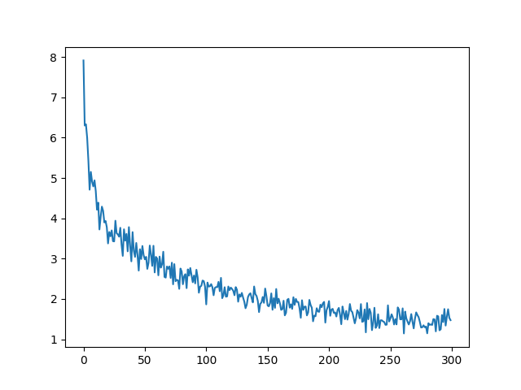

4 Numerical Differentiation
Let’s build and train a neural network to classify MNIST dataset. Numerical differentiation rather than backpropagation will be used for calculating gradient.
4.1 Basic Idea
The loss function of a neural network is a function of its parameters:
\[L = f(w_0, w_1, \dots, b_0, b_1, \dots)\]
The parameters are weights and biases.
Training a neural network is the process of moving these parameters against their partial derivatives to gradually decrease its loss.
The partial derivative of some weight:
\[\displaystyle \frac{\mathrm{d}L}{\mathrm{d}w_i} = \frac{f(\dots, w_i + h, \dots) - f(\dots, w_i, \dots)}{h}\]
Moving the weight against its partial derivative:
\[\displaystyle w_i \gets w_i - \frac{\mathrm{d}L}{\mathrm{d}w_i} \eta\]
\(\eta\) is called learning rate.
4.2 Implementation
The code is in code/numerical_differentiation.py.
The losses of 300 iterations:
